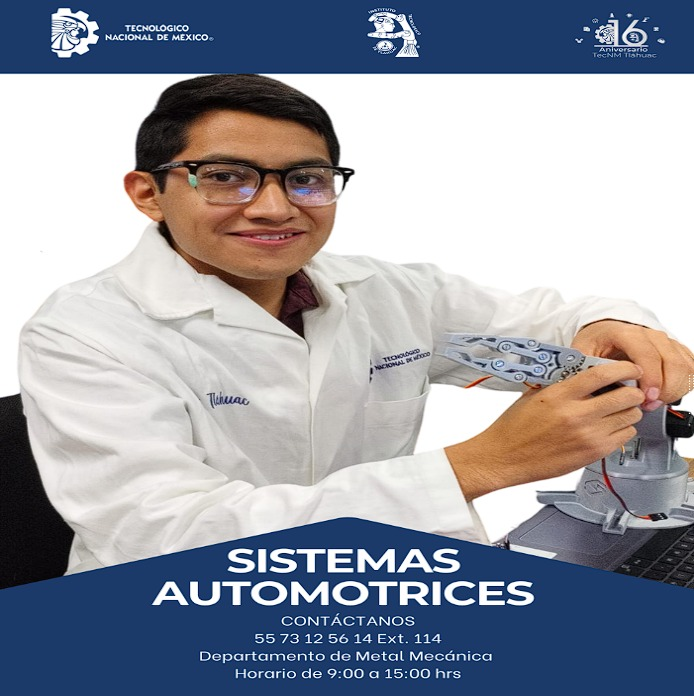

Podemos darle un vistazo al indice del Tecnm Tlahuac 🚗
"LA ESENCIA DE LA GRANDEZA RADICA EN LAS RAÍCES"
"

Podemos darle un vistazo al objetivo general del Tecnm Tlahuac 🚗
"LA ESENCIA DE LA GRANDEZA RADICA EN LAS RAÍCES"
OBJETIVO GENERAL
Formar ingenieros que se desempeñen en el diseño, planeación, desarrollo y automatización de sistemas automotrices, dentro del
marco legal y sustentable, mediante competencias científicas, tecnológicas y administrativas, con el fin de atender las necesidades del
sector automotriz, con una actitud ética, de liderazgo y responsabilidad social.
Podemos darle a el perfil de egreso del Tecnm Tlahuac 🚗
PERFIL DE EGRESO1.- Analiza y resuelve problemas de las diferentes disciplinas de ingeniería relacionadas con los sistemas automotrices,
mediante el desarrollo e implementación de las nuevas tecnologías enfocadas a las necesidades del sector automotriz, de forma
responsable y cooperativa.
2.- Fomenta el desarrollo sustentable para contribuir al equilibrio ambiental.
3.- Aplica conocimientos y habilidades generales de ingeniería en las áreas de diseño, manufactura, producción, calidad y
conservación de la infraestructura, para fomentar la competitividad del sector automotriz.
4.- Desarrolla sistemas automotrices, aplicando los procesos de manufactura desde la planeación y diseño de instalaciones
hasta las operaciones.
5.- Identifica, diagnostica y mide las áreas de oportunidad en los sistemas automotrices, para proponer alternativas de
mejora utilizando técnicas y controles estadísticos mediante el trabajo en equipo.
6.- Utiliza normas nacionales e internacionales pertinentes, para asegurar la calidad, productividad, seguridad y sustentabilidad del sector automotriz.
7.- Aplica herramientas computacionales de acuerdo a las tecnologías de vanguardia, para el diseño, simulación, operación y
optimización de sistemas automotrices acordes a la demanda del sector industrial.
8.- Diseña e integra sistemas de redes industriales para el control, comunicación y automatización de las líneas de
producción en la industria automotriz.
9.- Propone alternativas de mejora continua en los sistemas de producción para optimizar los recursos materiales, humanos y financieros.
10.- Aplica la capacidad de dirección, liderazgo y comunicación de relaciones interpersonales, para transmitir ideas,
facilitar conocimientos y trabajo en equipo con responsabilidad colectiva para la solución de problemas y desarrollo de proyectos
en ingeniería en sistemas automotrices.
Podemos darle un vistazo a los atributos de egreso del Tecnm Tlahuac 🚗
ATRIBUTOS DE EGRESO
Aplicar conocimientos técnicos para abordar y solucionar problemas en diferentes áreas de ingeniería, utilizado metodologías adaptadas a las necesidades del sector industrial para resolver desafíos técnicos que demuestren habilidades de análisis y resolución de problemas en contextos multidisciplinarios, empleando habilidades de dirección, liderazgo y comunicación interpersonal efectiva.
Desarrollar habilidades de liderazgo para dirigir equipos multidisciplinarios en proyectos de ingeniería comunicando ideas y conceptos de manera efectiva para fomentar la colaboración y el trabajo en equipo demostrando resolución de conflictos en entornos profesionales a través de habilidades para la gestión de proyectos de ingeniería en la industria.
Emplea metodologías y técnicas de gestión de proyectos para planificar, ejecutar y controlar proyectos de ingeniería optimizando recursos, cumpliendo con los objetivos establecidos y considerando la innovación, la sostenibilidad social en la gestión de procesos de producción para optimizar los recursos materiales, humanos y financieros.
Aplicar conocimientos de diseño para desarrollar soluciones técnicas en el sector automotriz, implementando procesos de fabricación eficientes y de calidad, administrando el mantenimiento de sistemas automotrices garantizando la eficiencia y el equilibrio ambiental, reconociendo la importancia de la investigación, innovación y actualización en el mejoramiento de los procesos.
Explorar nuevas tecnologías y metodologías para mejorar los sistemas automotrices, fomentando la cultura de la innovación, la mejora continua en la industria automotriz, manteniéndose actualizado sobre los avances tecnológicos y las tendencias en sistemas automotrices, aplicando las normas nacionales e internacionales para garantizar la calidad, productividad y sostenibilidad en el sector industrial.
Evaluar el cumplimiento de normas nacionales e internacionales para asegurar la calidad en la industria automotriz, implementando medidas que promuevan la productividad y la eficiencia en el sector industrial al Integrar prácticas de gestión de calidad y sostenibilidad para asegurar la satisfacción de los clientes y la competitividad en el mercado
Podemos darle un vistazo a los objetivos educacionales del Tecnm Tlahuac 🚗
Objetivos educacionales
Resolver situaciones específicas en diversas disciplinas de ingeniería, implementando metodologías adaptadas a las necesidades del sector industrial, siempre actuando con respeto, compromiso y ética profesional
Emplear habilidades de dirección, liderazgo y comunicación interpersonal efectiva, las cuales son utilizadas para transmitir ideas y fomentar el trabajo multidisciplinarios en proyectos eficientes.
Desarrollar habilidades para la gestión de proyectos de ingeniería en la industria, aplicando metodologías y técnicas de la administración de proyectos, con el fin de cumplir objetivos y optimizar recursos enfocados a la innovación y sostenibilidad social.
Aplicar sus competencias generales en áreas de diseño, procesos de fabricación, sistemas de calidad y administración del mantenimiento, con el objetivo de fomentar la competitividad del sector automotriz, sin descuidar el equilibrio ambiental.
Reconocer la importancia de la investigación, innovación y actualización en el mejoramiento de los procesos de los sistemas automotrices, empleando metodologías y técnicas para resolver situaciones en la industria.
Evaluar y aplicar las normas nacionales e internacionales para garantizar la calidad, productividad y sostenibilidad en el sector industrial, promoviendo los principios de la gestión de calidad, para asegurar la satisfacción de los clientes y la competitividad en el mercado.
Podemos darle un vistazo a la reticula del Tecnm Tlahuac 🚗